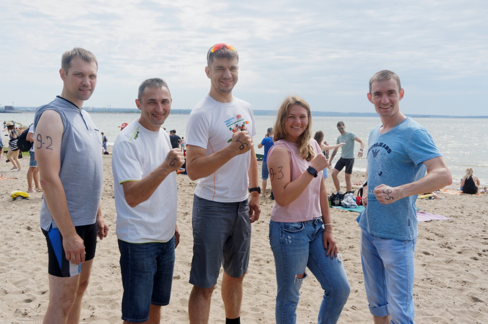
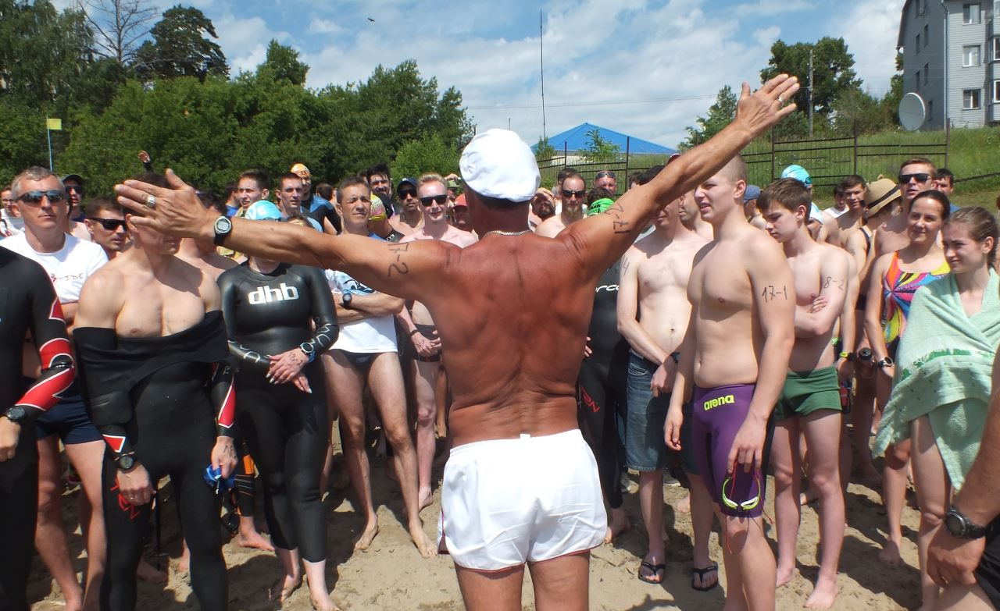
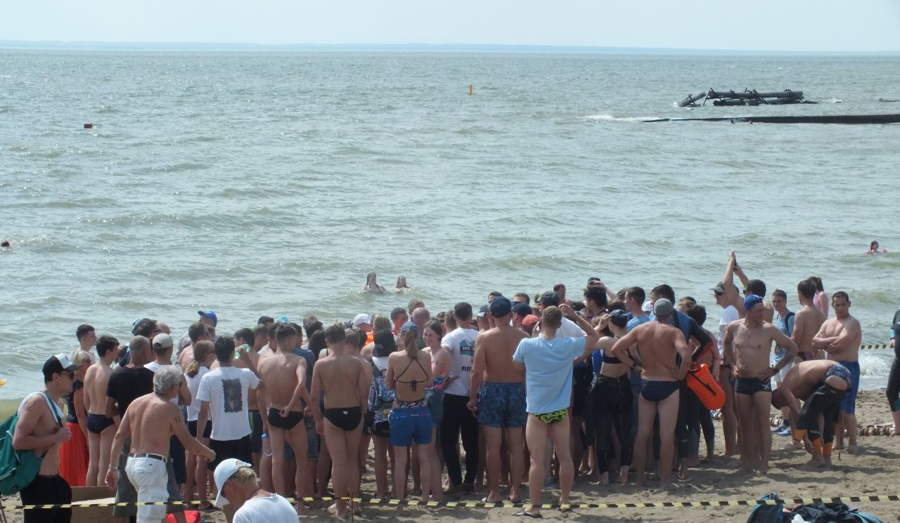
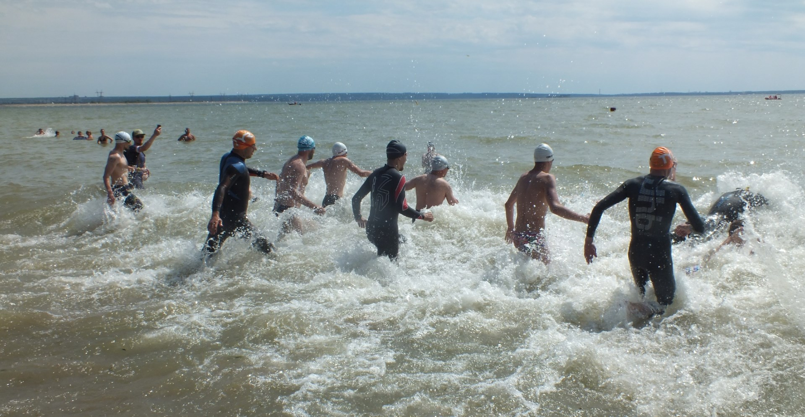
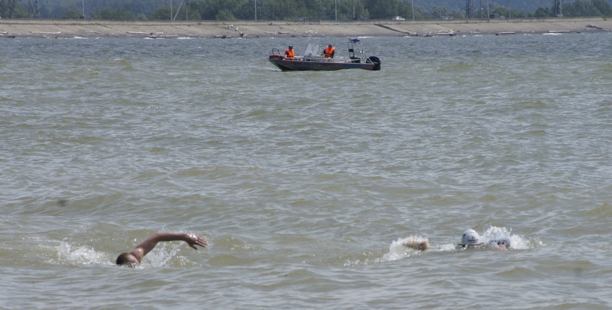
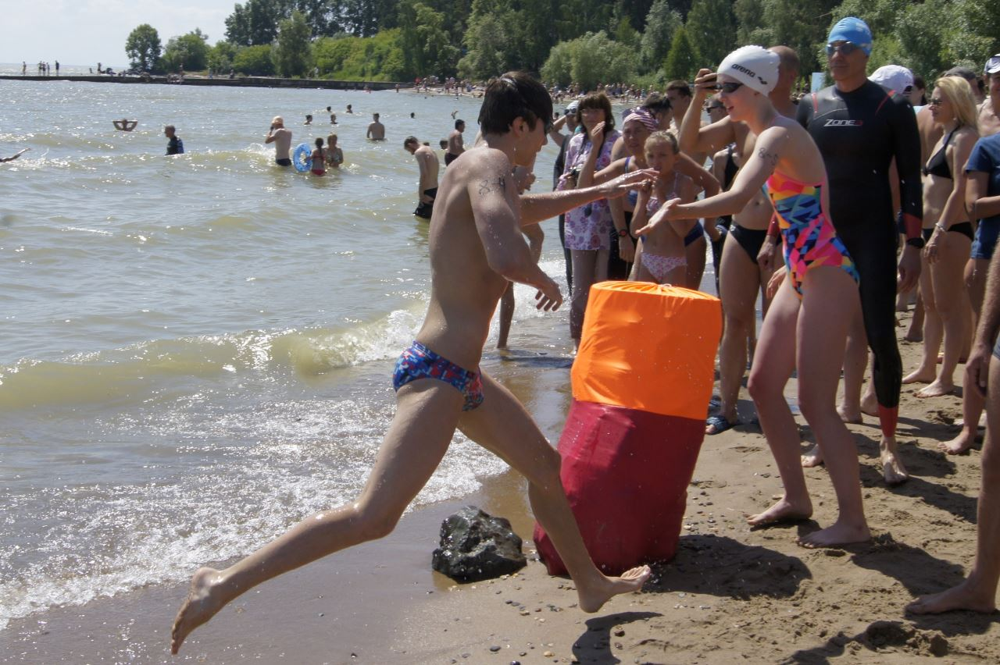
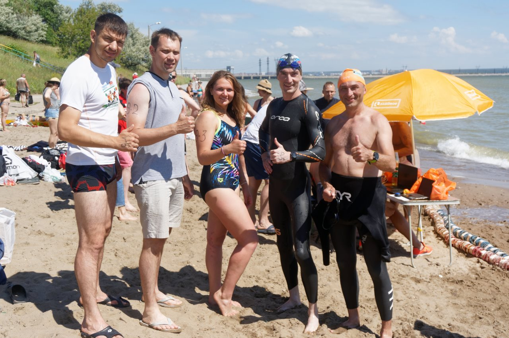

ОЧЕРКИ
Эстафетное плавание “Кубок Клубов”
- 6 minutes read - 1204 words– Вам есть 180 лет?
– Да, есть.
– А девушка у вас есть?
– Дааа.
– Как зовут?
– Кирилл.
Примерно такой диалог можно было услышать теплым июльским утром на пляже парка “У моря Обского” между секретарем судейской комиссии и молодым капитаном эстафетной команды по плаванию. И здесь нет ни одной опечатки.
Кубок Клубов – ежегодные любительские соревнования по плаванию на открытой воде между эстафетными командами на дистанции 5 по 1000 м. Нынче проводились в 5-ый раз. Старт организует новосибирская “Федерация холодового плавания”, и его традиционно отличают весьма затейливые положения об участии:
- в каждой команде строго 5 человек
- из них минимум 1 девушка
- суммарный возраст участников ≥180 лет
(т.е. средний возраст пловца – 36 лет😨 ) - лимит времени на участие всей команды – 100 минут
(т.е. каждый должен проплыть 1 км за ≈20 мин. 🤦♂ )
И это не считая обычного требования иметь медсправку/допуск и прочие формальности. Как ни странно, нам с товарищами удалось собрать такую команду. В нее вошли (в порядке заплыва): Григорий, Евгений, Валентина, Андрей и я.

Команда называлась “Волнорезы” и честно удовлетворяла основным требованиям: нам на пятерых было ровно 180 лет, среди нас была одна девушка, и каждый позаботился о полноценном медицинском допуске. Однако на месте регистрации довольно скоро стало ясно, что такая добросовестность была излишней – площадка была наводнена поджарыми студентами, искренне уверявшими судью, что их команде есть 180 лет (см. диалог выше). Были и команды по-старше, однако их гендерный состав не мог не вызывать улыбки. Впрочем, как бы там ни было, благодаря такому лояльному отношению организаторов, на старт заявилась аж 21 команда, то есть 105 спортсменов. Это почти в полтора раза больше, чем в предыдущий раз 👍

И без того сомневающиеся в своих силах, мы еще больше забеспокоились, когда с берега перед нами открылся вид на всю предстоящую дистанцию. Она представляла из себя большущий треугольник, размеченный высокими желтыми буями. С берега эти буи едва виднелись, но было заметно, как здорово их штормит на волнах. К слову, разволновавшееся море всем своим видом намекало, что легким этот заплыв точно не будет…

Стартовый свисток раздался ровно в 12:45, и толпа обтянутых в неопрен пловцов лихо рванула в сторону первого буя. Мне предстояло плыть последним (пятым) в своей команде, поэтому этих смельчаков я лишь проводил взглядом с берега. Я планировал начать экипироваться в гидрокостюм и разминаться тогда, когда в заплыв уйдет Андрей, мой предшественник по эстафете. Расчетных 20-25 минут должно было вполне хватить для этого. Однако я просчитался – к четвертому этапу общее время нашей команды уже было настолько большим, что мой старт рисковал не войти в лимит 100 минут. Я поговорил с судьей, и тот разрешил мне стартовать раньше, не дожидаясь предшественника, а время договорились засечь по моим часам. Так я и сделал: наскоро завершил помещение себя в костюм, всполоснул очки и рванул в воду.

Уже впрыгнув в бегущую на меня волну, я осознал, что такой старт заплыва может оказаться не очень удачным. Ведь, во-первых, я так и не размялся, а во-вторых, остался без привычного для себя плавного привыкания к воде. Последнее для меня-мерзляка особенно важно, поэтому обычно я неспеша вхожу в воду до уровня чуть ниже груди и жду, пока вода просочится через застежку замка на спине гидрокостюма и начнет холодить прогретую кожу, вызывая желание как-нибудь изогнуться. Ничего подобного в этот раз не было: вторая встречная волна беспардонно ворвалась под костюм через шейный ворот и лихо обдала прохладой почти все тело. К счастью, к тому времени я уже изрядно запарился на суше, да и сама вода, несмотря на сибирское лето, уже успела неплохо прогреться, так что эта минутка закаливания не сбила дыхания, и я практически сразу включился в гонку.
Как и рассказывали предшественники, первый участок давался весьма непросто из-за постоянных встречно-угловых волн. За два дня до этого старта мы с товарищем уже попадали на подобный “аттракцион” на Центральном пляже, благодаря чему я примерно знал, чего ждать и как действовать. Однако здесь это не сильно спасало, я все равно часто ошибался, и на попытках взглянуть вперед одновременно со вдохом раз за разом заглатывал порцию обской воды. Вдоволь напившись, я, наконец, добрался до первого буя, причем, как мне казалось, сделал это не совсем с той стороны, с какой должен был. Пока пытался понять, что произошло, заметил рядом с собой мужчину без гидрокостюма, подплывавшего к бую брассом. “Еще не хватало, чтоб меня обошел брассист без гидрика!” – мысленно выругался я, и едва завернув за буй, ускорился по второму участку.

Второй отрезок поддавался значительно легче благодаря тому, что был направлен параллельно гребням волны. Правда, из-за этого меня часто подбрасывало и опускало вниз, но по сравнению со встречными волнами это казалось просто развлечением. Первое время я не видел следующего буя, он был слишком далек, а волны высоки, поэтому я ориентировался на здание ОбьГЭС. Здесь же я осознал еще одну неприятную особенность слишком резкого старта: я не успел как следует приладить очки к глазам, и левую линзу забрызгало водой изнутри. Из-за этого почти все попытки взглянуть вперед на гребке левой рукой заканчивались одинаково мутным результатом, и я постепенно отказался от них вообще. К счастью, желтый столбик буя постепенно приблизился настолько, что начал просматриваться без особых усилий, а вскоре и вовсе остался за спиной. Следующий, последний из их желтого семейства, маячил также далеко и был едва заметен. Но к тому времени я уже более или менее привык просто грести прямо, так что приблизить себя к нему было совсем не сложно.
… чего не скажешь о последнем отрезке. Он снова пролегал под углом к волнам, но на этот раз под смежным. С одной стороны, это было хорошо, ведь волны немного помогали приближаться к финишу. С другой – они корректировали направление, как им вздумается, и это приходилось постоянно учитывать. К тому же большая яркая бочка, стоявшая на финише и казавшаяся вблизи такой легко заметной, оказалась абсолютно не видна с дальнего буя.

Из-за этого пришлось снова ориентироваться на что-нибудь по-крупнее. В этот раз – на весь пляж целиком. Плывя к нему, я опасался, что меня начнет раньше времени прибивать к берегу, но эти опасения не оправдались, вместо этого меня уносило от него вдаль🤦♂ И если поначалу это было приемлемо, то к концу дистанции пришлось активно забирать вправо, чтобы не пролететь мимо финиша. Всё-таки это не река, и здесь мне удалось нормально скорректировать свой курс. Я перешел на бег по мелководью в аккурат перед бочкой и хлопнул по ней ладонью в момент, когда часы показали 00:20:56.
Конечно, такой результат нельзя назвать высоким, с чем ни сравнивай: хоть с лучшими финишерами этого заплыва (≈13 мин), хоть с моим же километром в бассейне (≈19 1⁄2 мин). Да и общекомандное время разместило нас недалеко от конца финишного протокола. Тем не менее, я остался доволен этим стартом, ведь он стал источником нового, полезного опыта, а заодно и “референтной точкой” для оценки будущих результатов.

Этот заплыв снова заставил меня осознать, как много отличий у плавания на открытой воде от плавания в бассейне: это и температура, и сложность ориентирования, и отсутствие опор, а теперь еще и волны. Вместе с тем, открытое плавание дарит и массу новых приятных впечатлений. Для меня ими стали не только этот старт, но и утренние тренировки на Обском море, когда в самом начале дня я уже побывал на отдаленных, живописных, обычно не посещаемых мною точках побережья. Думаю, что если бы позволял климат, я бы с удовольствием почаще дополнял такими заплывами обычные тренировки в бассейне 🏊
© Фото: Николай Яковлев, Ольга Ильина, Андрей Сердцев